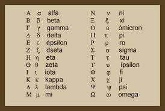

Las **etimologías griegas** estudian el origen y significado de las palabras que provienen del griego antiguo. La palabra “etimología” proviene del griego *étymon* (verdadero significado) y *lógos* (estudio o tratado). El griego es una de las lenguas que más ha influido en el español. Gran parte del vocabulario científico y técnico tiene raíces griegas. Especialmente en medicina, biología, filosofía y matemáticas. Muchas palabras están formadas por raíces, prefijos y sufijos griegos. Una raíz aporta el significado principal de la palabra. Los prefijos se colocan al inicio y modifican el sentido. Los sufijos se añaden al final y también cambian el significado. Por ejemplo, el prefijo *bio-* significa vida. Proviene del griego *bíos*. La palabra “biología” significa estudio de la vida. Está formada por *bio-* (vida) y *-logía* (estudio). El sufijo *-logía* proviene de *lógos*. Significa tratado o ciencia. Otra raíz común es *antropo-*, que significa hombre o ser humano. “Antropología” es el estudio del ser humano. El prefijo *geo-* significa tierra. “Geografía” es la descripción de la tierra. *Psico-* significa mente o alma. “Psicología” es el estudio de la mente. En medicina son comunes términos como *cardio-* (corazón). También *derma-* (piel). *Neuro-* significa nervio. “Hemato-* significa sangre. Estas raíces permiten comprender términos complejos. Por ejemplo, “cardiología” es el estudio del corazón. “Neurología” es el estudio del sistema nervioso. El conocimiento de las etimologías griegas facilita la comprensión del vocabulario académico. Permite deducir el significado de palabras desconocidas. También ayuda en la correcta escritura de términos técnicos. Muchas palabras conservan su forma casi original del griego. Otras han sido adaptadas al latín y luego al español. Las etimologías muestran la historia y evolución del lenguaje. Son fundamentales en el estudio de la lingüística. También en la formación académica. Conocer raíces griegas amplía el vocabulario. Además, fortalece la comprensión lectora en textos científicos. **Referencias en formato APA (7.ª edición):** Chantraine, P. (1999). *Dictionnaire étymologique de la langue grecque: Histoire des mots*. Klincksieck. Beekes, R. (2010). *Etymological dictionary of Greek* (2 vols.). Brill. Frisk, H. (1973). *Griechisches etymologisches Wörterbuch*. Carl Winter Universitätsverlag.
